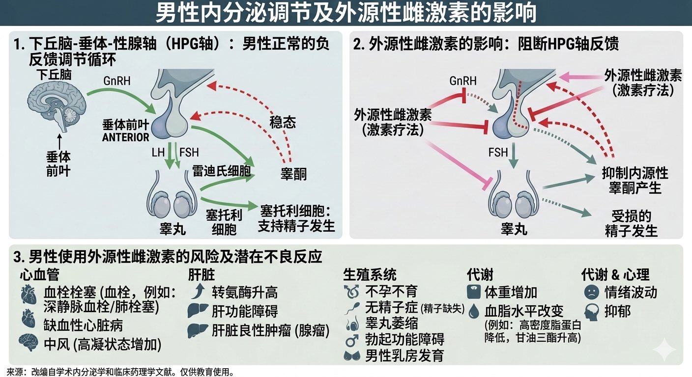

たたなこ
@tatanakots
@andy88988696 雌激素的抗雄效果并没有那么好，化学阉割需要使用醋酸环丙孕酮，否则是雌雄双高
另外正确使用外源性激素后性欲也可能不会降低，并且我在睾酮水平小于1nmol/L后依旧可以正常勃起（只是性唤起条件不同）

DIABETE_PANDA
@andy88988696
X上有很多推文基本上都是毁三观的
但是看到了又忍不住想去查资料看看如果造做了会有什么后果
下面这篇文章来跟大家揭密有关如果一位男性长期服用雌激素会有什么后果～
一、 药理机制：下丘脑-垂体-性腺轴的崩溃
男性的内分泌系统是依靠负回馈机制运作的。
当摄入大剂量雌二醇后： https://t.co/kaqwyucuCS